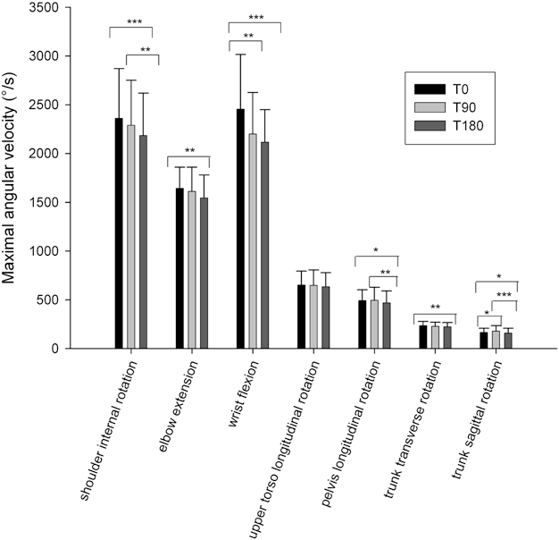
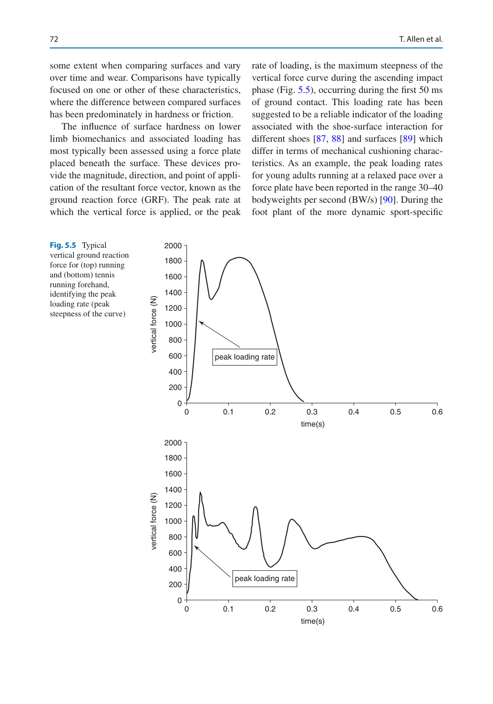
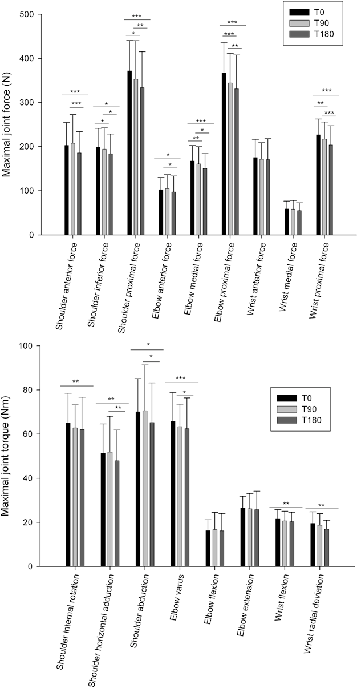

Phần I: Cơ Sinh Học Quần Vợt, Chuỗi Động Học & Dòng Chảy Năng Lượng Cú Giao Bóng
Khảo sát y học đỉnh cao từ ban chuyên gia ATP Tour, cơ chế chuyển giao động lượng từ mặt đất qua các khớp và nguyên nhân gây quá tải chi trên
1. Lời Tựa Từ Novak Djokovic & Rafael Nadal: Sứ Mệnh Của Y Học Thể Thao Đỉnh Cao
Trong kỷ nguyên quần vợt hiện đại với mật độ thi đấu dày đặc và cường độ va đập cực hạn, ranh giới giữa một danh hiệu vô địch Grand Slam và một ca phẫu thuật kết thúc sự nghiệp thường chỉ mỏng manh như một sợi tóc.
Trong lời tựa đặc biệt cho công trình này, Novak Djokovic và Rafael Nadal — hai tượng đài vĩ đại bậc nhất lịch sử quần vợt thế giới — đều khẳng định rằng y học thể thao chuyên sâu chính là chiếc chìa khóa sống còn giúp họ kéo dài sự nghiệp đỉnh cao suốt hai thập kỷ.
Djokovic chia sẻ rằng mọi cú vung vợt hoa mỹ trên sân trung tâm đều được nâng đỡ bởi sự thấu hiểu sâu sắc về giải phẫu học cơ thể, tính toán cơ sinh học chuẩn xác và sự chăm sóc y tế dự phòng tỉ mỉ từng ngày.
Cuốn sách Tennis Medicine, do Tiến sĩ Giovanni Di Giacomo, Todd S. Ellenbecker (Phó Chủ tịch Dịch vụ Y tế Hiệp hội Quần vợt Nhà nghề Nam ATP Tour) và Tiến sĩ W. Ben Kibler (Giám đốc Y khoa Trung tâm Y học Thể thao Lexington Clinic) đồng chủ biên, là bản tổng phổ y học thể thao đồ sộ và uy quyền nhất từng được biên soạn dành riêng cho môn quần vợt.
2. Cơ Sinh Học Cú Giao Bóng & Khái Niệm Chuỗi Động Học (The Kinetic Chain Concept)
Cú giao bóng quần vợt là một trong những chuyển động bộc phát nhanh nhất và phức tạp nhất trong toàn bộ thế giới thể thao.
Tốc độ đầu vợt có thể vượt qua hai trăm kilômét một giờ chỉ trong vòng vài phần trăm giây, đòi hỏi sự phối hợp hoàn hảo của toàn bộ cơ thể theo mô hình "Chuỗi Động Học" (The Kinetic Chain).
Tiến sĩ W. Ben Kibler định nghĩa chuỗi động học như một hệ thống liên kết tuần hoàn gồm các phân đoạn cơ thể hoạt động tuần tự từ dưới lên trên:
Phân đoạn một, chi dưới và mặt đất (Lower Extremity): Bàn chân đạp mạnh xuống mặt sân, các khớp cổ chân, đầu gối và khớp háng duỗi thẳng bộc phát để hấp thụ phản lực từ mặt đất (Ground Reaction Force). Phân đoạn này đóng góp tới năm mươi mốt phần trăm tổng động năng và năm mươi tư phần trăm lực mô-men xoắn của toàn bộ cú giao bóng.
Phân đoạn hai, thân mình và khung chậu (Trunk and Pelvis): Lực từ chi dưới truyền lên xương chậu, kích hoạt sự xoay vặn bùng nổ của các khối cơ lõi vùng bụng và cột sống thắt lưng, chuyển hóa động năng tịnh tiến thành động năng quay.
Phân đoạn ba, khớp bả vai và khớp vai (Scapula and Glenohumeral Joint): Xương bả vai đóng vai trò bệ phóng vững chắc, ổn định đầu xương cánh tay để truyền năng lượng qua đai vai mà không làm tổn hại các mô mềm bao quanh.
Phân đoạn bốn, khuỷu tay, cẳng tay và cổ tay (Elbow, Forearm, and Wrist): Các khớp nhỏ ở ngoại vi hoạt động như chiếc roi da quất mạnh ở phần cuối của chuỗi động, giải phóng năng lượng qua chuyển động xoay sấp cẳng tay (Pronation) và Động tác sấp cổ tay / xoay trong cẳng tay vào tâm bóng.
3. Dòng Chảy Năng Lượng & Hậu Quả Của Đứt Gãy Chuỗi Động (Energy Flow & Joint Overload)
Một nguyên lý y học cốt tử được Ellenbecker và Kibler nhấn mạnh là "Quy luật bù trừ lực" (The Compensation Mechanism).
Khi tất cả các mắt xích trong chuỗi động học hoạt động trơn tru, năng lượng được truyền dẫn mượt mà từ các nhóm cơ lớn ở chân và thân mình lên cánh tay, giúp các khớp nhỏ ở vai và khuỷu tay chỉ phải chịu một mức tải trọng cơ học an toàn.
Tuy nhiên, nếu xuất hiện một mắt xích yếu hoặc bị đứt gãy trong chuỗi động — ví dụ như vận động viên không nhún gối đủ sâu, cơ hông bị co cứng hoặc cơ bụng yếu — tổng động năng của cú giao bóng sẽ bị suy giảm nghiêm trọng.
Để bù đắp lại vận tốc bóng bị thiếu hụt, hệ thần kinh trung ương sẽ tự động ra lệnh cho các nhóm cơ nhỏ ở khớp vai và khuỷu tay phải co bóp gồng gượng quá mức.
Nghiên cứu cơ sinh học thực nghiệm chứng minh rằng chỉ cần suy giảm hai mươi phần trăm động năng từ chi dưới và thân mình, khớp vai sẽ phải gia tăng áp lực mô-men xoắn lên tới ba mươi tư phần trăm để duy trì cùng một tốc độ bóng.
Chính áp lực bù trừ quá mức và lặp đi lặp lại này là thủ phạm hàng đầu dẫn đến rách gân chóp xoay, rách sụn viền khớp vai (SLAP Lesion) và viêm lồi cầu ngoài xương cánh tay (Tennis Elbow).

Hình 1: Mô hình phân tích chuỗi động học và dòng chảy năng lượng từ chi dưới lên điểm tiếp xúc bóng của cú giao bóng quần vợt (Di Giacomo, Ellenbecker & Kibler).

Phần II: Bệnh Lý Khớp Vai, Rối Loạn Vận Động Bả Vai & Hội Chứng GIRD
Phân tích hội chứng SICK Scapula của Tiến sĩ Kibler, cơ chế chèn ép khớp vai trong và phương pháp chẩn đoán rách sụn viền chóp xoay
4. Vai Trò Cốt Tử Của Xương Bả Vai & Hội Chứng Rối Loạn Vận Động (Scapular Dyskinesis)
Xương bả vai (Scapula) thường được ví như "trái tim cơ học" của toàn bộ đai vai trong các môn thể thao ném và vung vợt qua đầu.
Tiến sĩ W. Ben Kibler — chuyên gia hàng đầu thế giới về cơ học bả vai — chỉ ra rằng xương bả vai thực hiện ba chức năng sinh lý sống còn:
Thứ nhất, duy trì một bệ tựa ổn định (Stable Base) cho chỏm xương cánh tay xoay chuyển nhịp nhàng, tối ưu hóa diện tích tiếp xúc của ổ chảo để ngăn ngừa trật khớp vi thể.
Thứ hai, nâng vòm cùng vai (Acromion) lên cao trong động tác nâng cánh tay trên đầu, ngăn chặn hiện tượng chèn ép gân cơ trên gai (Supraspinatus Tendon) vào mỏm cùng vai.
Thứ ba, chuyển tiếp động lượng liên tục từ cột sống ngực và thân mình sang cánh tay.
Khi các cơ giữ bả vai (đặc biệt là cơ răng trước Serratus Anterior và cơ thang dưới Lower Trapezius) bị ức chế hoặc mỏi mệt, xương bả vai sẽ mất đi sự đồng bộ vận động — trạng thái này được gọi là "Rối Loạn Vận Động Bả Vai" (Scapular Dyskinesis).
Kibler đã hệ thống hóa hội chứng "SICK Scapula": bao gồm sự hạ thấp mỏm cùng vai, bờ trong xương bả vai nhô gồ ra sau (Scapular Winging), đau nhức vùng mỏm quạ và rối loạn toàn diện nhịp vận động bả vai - cánh tay. Sự hiện diện của hội chứng này làm gia tăng gấp bốn lần nguy cơ rách gân chóp xoay ở vận động viên quần vợt.
5. Hội Chứng Thâm Hụt Góc Xoay Trong (GIRD) & Tổn Thương Khớp Vai
Một biến đổi giải phẫu học thích nghi rất phổ biến ở các tay vợt thi đấu lâu năm là hiện tượng mất cân bằng tầm vận động khớp vai (Range of Motion Alterations).
Todd S. Ellenbecker mô tả chi tiết hội chứng GIRD (Glenohumeral Internal Rotation Deficit):
Do phải thực hiện hàng ngàn cú giao bóng với pha hãm phanh cực mạnh ở tốc độ cao, bao khớp sau của vai bị dày lên và co cứng xơ hóa, kết hợp với hiện tượng xoay sau của trục xương cánh tay (Humeral Retroversion).
Kết quả là tay vợt có tầm xoay ngoài (External Rotation) tăng lên đáng kể nhưng lại bị suy giảm nghiêm trọng tầm xoay trong (Internal Rotation) so với bên tay không thuận.
Khi mức thâm hụt góc xoay trong vượt quá hai mươi độ hoặc tổng cung vận động (Total Arc of Motion) giữa hai bên chênh lệch trên năm độ, áp lực kéo căng lên gân cơ nhị đầu và phức hợp sụn viền trên (Superior Labrum) sẽ tăng vọt.
Tình trạng này trực tiếp gây ra hai bệnh lý nghiêm trọng:
Hiện tượng chèn ép trong (Internal Impingement): Chỏm xương cánh tay bị đẩy dịch lên trên và ra sau khi vung vợt qua đầu, kẹp chặt gân cơ dưới gai và cơ trên gai vào mép sau trên của ổ chảo.
Tổn thương sụn viền SLAP (Superior Labrum Anterior to Posterior Tear): Lực giật xoắn của đầu dài gân cơ nhị đầu làm bong tróc sụn viền khỏi bờ xương ổ chảo, gây ra những cơn đau nhói buốt mỗi khi phát bóng.

Hình 2: Phân tích cơ sinh học khớp ổ chảo cánh tay và sự tương tác giữa bao khớp sau, xương bả vai và gân chóp xoay trong quần vợt (Di Giacomo & Ellenbecker).